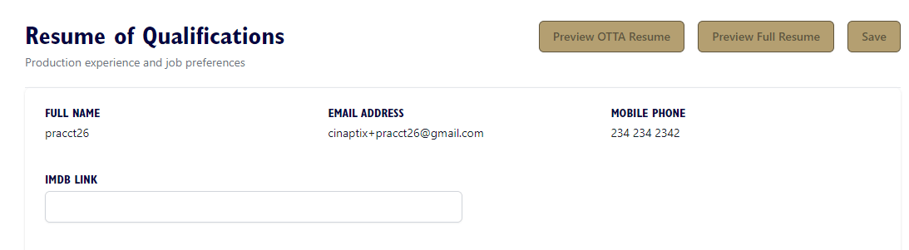
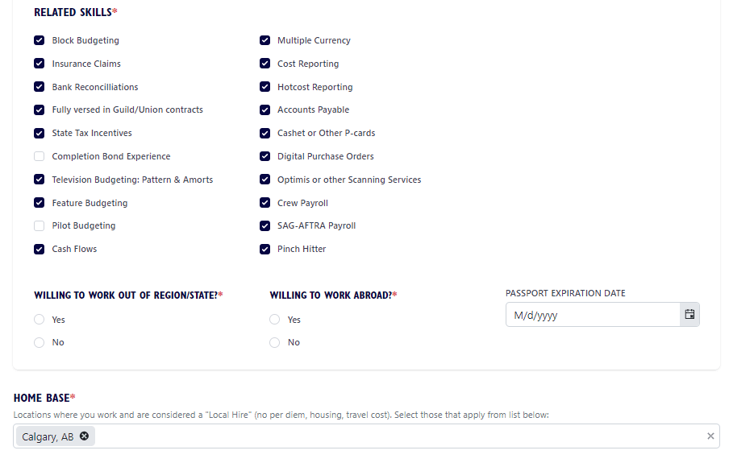
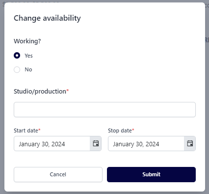

OTTA'S RESUME OF QUALIFICATIONS
The Resume of Qualifications is a critical component of your application.
It is presented as a scrollable page divided into several sections. Let's start with the upper
section, which includes the information you've already provided.
If you have an IMDb profile, you have the option to include a hyperlink to your profile here. This
allows employers to conveniently access your profile with a single click, although it is not
mandatory.
We strongly recommend that all members visit IMDb.com to ensure the accuracy of their
profiles. IMDb provides detailed instructions for adding, editing, or correcting your information.
Credits verified by IMDb through documented proof of your employment will appear on your
IMDb profile as "uncredited," yet employers consider these credits as verified.

UNION AFFILIATION, OFFICE PREFERENCE & SOFTWARE EXPERIENCE
In this next section, please check items below that apply to your employment data.
Items below items checked for example only:

RELATED SKILLS, DISTANT OR LOCAL HIRE & HOME BASE:
Please choose the relevant skills that apply to you and answer the following questions:
- If you've responded “Yes” to "Willing To Work Abroad," please provide your passport expiration date, if applicable.
- Specify your HOME BASE. This determines whether you are considered a LOCAL or DISTANT HIRE for Employer Job Requests.
Special Feature: Pinch Hitters
In the Related Skills section, there's a feature called "Pinch Hitters." Check this box if you're open to short-term employment opportunities when available. Employers can select "Pinch
Hitters" on job requests when they require immediate short-term assistance, applicable to
various roles. Pinch Hitters may also be asked to fill in temporarily for others.
If you prefer seeking employment for the duration of a show, you may opt not to select Pinch
Hitters. You can change this preference at any time.

CREDITS
List your film & television work history in this area. Select 'Add Credit' button for EACH show.

Fields with an * are
REQUIRED FIELDS. The Finance Executive and Production Executive
fields are only REQUIRED for Department Heads and Production Accountant-non HODs.
The ”Details” section contains a dropdown of some examples of situations that increase the
complexity of a show. It's not a complete list, of course…you can address others during your
interviews. Once you've clicked “Details” that applied to that show, click outside of the area and
the dropdown will disappear.
When completing this page, please be as thorough as possible. And click 'SAVE' when done.

You can always go back and update a credit.
Continue selecting 'Add Credit' until you have included all the work history you want Employers to view.

When you have finished adding credits, please note the area below the 'CREDITS' area in the
Resume of Qualifications.
Your experience will automatically generate Accounting Roles in the 'CONSIDER FOR' section:

Selecting Accounting Roles and Specifying Minimum Rates:
Select the Accounting Roles you are willing to accept if your qualifications and availability align
with an Employer's Job Request. Specify your minimum rate for each role. Only you and OTTA
Admin have access to this information.
If an Employer's offered wage range falls below your specified minimum rate, your resume will
not be included in the matching results for that Job Request. To ensure your resume is
considered for matching, enter the lowest rate you would accept for each role.
When your qualifications match an Employer's Job Request and their rate exceeds your
specified minimum, your resume will be included in the matching results sent to Employers.
Keep your minimum rates competitive to increase your chances of being selected for job
requests.
Final hiring rates will be determined through your negotiations with Employers. As your resume
circulates, this information will automatically appear in your Team Member Dashboard.
Opportunity Notice:
Please take note of the following message: "To be considered for other roles, email
admin@ottainc.com."
If you believe you have the necessary experience and are ready to advance to the next level in
Production Accounting, please send an email to the address provided above indicating your
readiness. Should an opportunity arise where we can introduce you as a potential candidate to
an employer, we will do so. However, OTTA cannot guarantee any specific outcomes.
Please be aware that we reserve the right to discontinue these efforts if we observe misuse of
this process. Ensure that your resume reflects ample experience in previous roles and that your
references will likely affirm your readiness for advancement to the next level.
OTHER EXPERIENCE
Relevant Experience and Entry-Level Work History:
This section is relevant if you have industry experience that you would like to include on your
resume, such as executive positions, staff roles, producing, production managing or experience
in other departments.
Entry-level members will use this section to document their past work history outside of film &
television.


Click 'Add Other Experience' to make an entry. Then, complete the
fields and click Save.
FOREIGN EXPERIENCE & FOREIGN LANGUAGES
Navigate to the next section by placing your mouse cursor in the box and selecting options from
the dropdown menu. You can add multiple items to these fields by placing your cursor back in
the box after making each selection.

EDUCATION
Click 'Add School' to enter the name of EACH Institution and Degree or Certification earned.
Select 'Add School' for each Institution and Degree or Certification you wish Employers to
view.
If you have completed the CA Film Commission Pilot Career Pathways Program, 'Entry Level
Production Accounting Course,' any courses from the School of Production Accounting, or other
relevant training or certification in Production Accounting, please include it here."


You can always update this information or add additional education or certifications
received.

REFERENCES - Please enter a minimum of 3 references

Please ensure that you provide current contact information wherever possible.
Click on 'Add Reference' each time you want to add a different reference.
The top 3 references will be featured on the OTTA Resume. If you include more than 3
references, the system allows you to 'Move Up' and 'Move Down' in case you would like to
change which 3 references show up on your OTTA Resume. You can update your reference
information, add or change references at any time.


In order to save your input, you must click either the SAVE button found at
the bottom of the page or the SAVE button found at the top of the page.
Warning: If you don't save, you risk losing some of the data entered!!!
Once you have clicked 'SAVE', you will receive the message below:

The next step involves a review by the OTTA administrator, who will verify your resume before
approving your account. Once approved, you will receive the email below containing a sign-in
link.

Clicking the 'Sign-In' link will take you to the Member Sign-In page:

Once you are logged back into your account, you will see your dashboard (see example
below):

Clicking on 'CONFIRM AVAILABILITY' will indicate that you are immediately available for work.
If working, update your availability by clicking on 'CHANGE AVAILABILITY'. Confirm that you
are currently employed by selecting 'Yes' for the 'Working?' question, and provide the name of
the Production Company and Show Name.
Specify your Start Date and ANTICIPATED STOP DATE (also known as Wrap Date)
accurately.
It's crucial to update your availability!
OTTA's system utilizes your specified dates when fulfilling Employer's Job Requests. Your
resume will start circulating six weeks before your STOP DATE to match employers seeking
accounting teams for those dates
If your STOP DATE changes for any reason, please revisit your dashboard, click on the
'Change Availability' button, and make the necessary updates.

CONGRATULATIONS!!!
You have completed account set up, thank you!